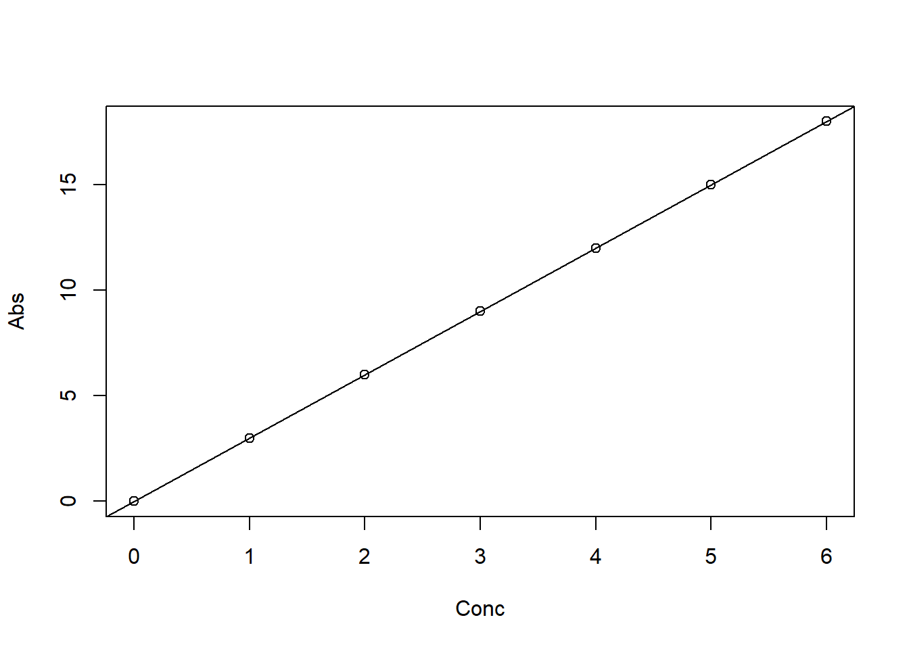
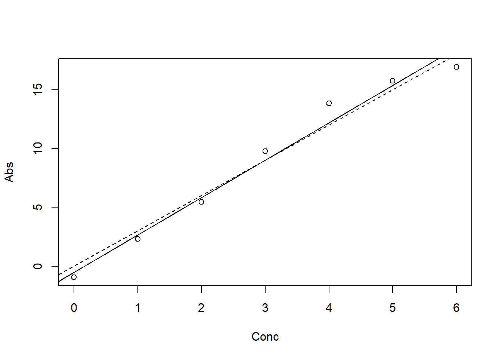

set.seed(2027)Simulatie lineaire regressie
Wat is het model?
Het statistische model bij jullie experiment is:
\[\text{Abs} = a + b \cdot \text{Conc} + \varepsilon\]
We nemen aan dat \(\varepsilon\) normaal verdeeld is met gemiddelde 0 en standaarddeviatie (SD) 1.
Met set.seed() krijg je bij elke run dezelfde toevalsgetallen:
Eerst maken we de concentraties Conc:
Conc <- c(0, 1, 2, 3, 4, 5, 6)
n <- length(Conc)Dan kiezen we het intercept a en de richtingscoëfficiënt b:
a <- 0
b <- 3Dan maken we eerst het deterministische model en plotten we dat:
Abs <- a + b * Conc
plot(Abs ~ Conc)
abline(a, b)
Alle punten liggen op de lijn. Nu voegen we spreiding toe aan de data. Daarvoor maken we eerst \(\varepsilon\):
Epsilon <- rnorm(n = n, mean = 0, sd = 1)
print(Epsilon)[1] -0.9348780 -0.6938629 -0.5479451 0.7662709 1.8521002 0.7541234 -1.0849792Interlude: variantie
De spreiding van Epsilon meten we met de variantie: de som van de kwadraten rond het gemiddelde, gedeeld door \(n - 1\):
\[s^2 = \frac{\sum_{i=1}^{n} (\varepsilon_i - \bar{\varepsilon})^2}{n - 1}\]
In R wordt dat:
sum((Epsilon - mean(Epsilon))^2)[1] 7.41726Variantie <- sum((Epsilon - mean(Epsilon))^2) / (n - 1)
Variantie[1] 1.23621var(Epsilon)[1] 1.23621sqrt(var(Epsilon))[1] 1.11185sd(Epsilon)[1] 1.11185Nu simuleren we het hele model:
Abs <- a + b * Conc + Epsilon
plot(Abs ~ Conc)
abline(a, b, lty = 2)
abline(lm(Abs ~ Conc), lty = 1)
De gestippelde lijn is de echte lijn, de doorgetrokken lijn de geschatte. Nu kunnen we er een statistische analyse op loslaten:
Model <- lm(Abs ~ Conc)
summary(Model)
Call:
lm(formula = Abs ~ Conc)
Residuals:
1 2 3 4 5 6 7
-0.4315 -0.3636 -0.3907 0.7504 1.6632 0.3922 -1.6200
Coefficients:
Estimate Std. Error t value Pr(>|t|)
(Intercept) -0.5034 0.7816 -0.644 0.548
Conc 3.1731 0.2168 14.638 2.69e-05 ***
---
Signif. codes: 0 '***' 0.001 '**' 0.01 '*' 0.05 '.' 0.1 ' ' 1
Residual standard error: 1.147 on 5 degrees of freedom
Multiple R-squared: 0.9772, Adjusted R-squared: 0.9726
F-statistic: 214.3 on 1 and 5 DF, p-value: 2.688e-05Wat zit er in Model?
str(Model)List of 12
$ coefficients : Named num [1:2] -0.503 3.173
..- attr(*, "names")= chr [1:2] "(Intercept)" "Conc"
$ residuals : Named num [1:7] -0.432 -0.364 -0.391 0.75 1.663 ...
..- attr(*, "names")= chr [1:7] "1" "2" "3" "4" ...
$ effects : Named num [1:7] -23.854 16.79 -0.266 0.838 1.712 ...
..- attr(*, "names")= chr [1:7] "(Intercept)" "Conc" "" "" ...
$ rank : int 2
$ fitted.values: Named num [1:7] -0.503 2.67 5.843 9.016 12.189 ...
..- attr(*, "names")= chr [1:7] "1" "2" "3" "4" ...
$ assign : int [1:2] 0 1
$ qr :List of 5
..$ qr : num [1:7, 1:2] -2.646 0.378 0.378 0.378 0.378 ...
.. ..- attr(*, "dimnames")=List of 2
.. .. ..$ : chr [1:7] "1" "2" "3" "4" ...
.. .. ..$ : chr [1:2] "(Intercept)" "Conc"
.. ..- attr(*, "assign")= int [1:2] 0 1
..$ qraux: num [1:2] 1.38 1.22
..$ pivot: int [1:2] 1 2
..$ tol : num 1e-07
..$ rank : int 2
..- attr(*, "class")= chr "qr"
$ df.residual : int 5
$ xlevels : Named list()
$ call : language lm(formula = Abs ~ Conc)
$ terms :Classes 'terms', 'formula' language Abs ~ Conc
.. ..- attr(*, "variables")= language list(Abs, Conc)
.. ..- attr(*, "factors")= int [1:2, 1] 0 1
.. .. ..- attr(*, "dimnames")=List of 2
.. .. .. ..$ : chr [1:2] "Abs" "Conc"
.. .. .. ..$ : chr "Conc"
.. ..- attr(*, "term.labels")= chr "Conc"
.. ..- attr(*, "order")= int 1
.. ..- attr(*, "intercept")= int 1
.. ..- attr(*, "response")= int 1
.. ..- attr(*, ".Environment")=<environment: R_GlobalEnv>
.. ..- attr(*, "predvars")= language list(Abs, Conc)
.. ..- attr(*, "dataClasses")= Named chr [1:2] "numeric" "numeric"
.. .. ..- attr(*, "names")= chr [1:2] "Abs" "Conc"
$ model :'data.frame': 7 obs. of 2 variables:
..$ Abs : num [1:7] -0.935 2.306 5.452 9.766 13.852 ...
..$ Conc: num [1:7] 0 1 2 3 4 5 6
..- attr(*, "terms")=Classes 'terms', 'formula' language Abs ~ Conc
.. .. ..- attr(*, "variables")= language list(Abs, Conc)
.. .. ..- attr(*, "factors")= int [1:2, 1] 0 1
.. .. .. ..- attr(*, "dimnames")=List of 2
.. .. .. .. ..$ : chr [1:2] "Abs" "Conc"
.. .. .. .. ..$ : chr "Conc"
.. .. ..- attr(*, "term.labels")= chr "Conc"
.. .. ..- attr(*, "order")= int 1
.. .. ..- attr(*, "intercept")= int 1
.. .. ..- attr(*, "response")= int 1
.. .. ..- attr(*, ".Environment")=<environment: R_GlobalEnv>
.. .. ..- attr(*, "predvars")= language list(Abs, Conc)
.. .. ..- attr(*, "dataClasses")= Named chr [1:2] "numeric" "numeric"
.. .. .. ..- attr(*, "names")= chr [1:2] "Abs" "Conc"
- attr(*, "class")= chr "lm"Als je er elementen uit wilt halen:
Model$coefficients # of coef(Model)(Intercept) Conc
-0.5033509 3.1730612 Model$residuals # of resid(Model) 1 2 3 4 5 6 7
-0.4315271 -0.3635733 -0.3907166 0.7504382 1.6632062 0.3921682 -1.6199956 Model$fitted.values # of fitted(Model) 1 2 3 4 5 6 7
-0.5033509 2.6697103 5.8427715 9.0158328 12.1888940 15.3619552 18.5350164 Let op: de residuen zijn niet hetzelfde als Epsilon. Epsilon is het echte stochastische deel; de residuen zijn de afstanden tot de geschatte lijn.
Zo ook voor de samenvatting van een model:
str(summary(Model))List of 11
$ call : language lm(formula = Abs ~ Conc)
$ terms :Classes 'terms', 'formula' language Abs ~ Conc
.. ..- attr(*, "variables")= language list(Abs, Conc)
.. ..- attr(*, "factors")= int [1:2, 1] 0 1
.. .. ..- attr(*, "dimnames")=List of 2
.. .. .. ..$ : chr [1:2] "Abs" "Conc"
.. .. .. ..$ : chr "Conc"
.. ..- attr(*, "term.labels")= chr "Conc"
.. ..- attr(*, "order")= int 1
.. ..- attr(*, "intercept")= int 1
.. ..- attr(*, "response")= int 1
.. ..- attr(*, ".Environment")=<environment: R_GlobalEnv>
.. ..- attr(*, "predvars")= language list(Abs, Conc)
.. ..- attr(*, "dataClasses")= Named chr [1:2] "numeric" "numeric"
.. .. ..- attr(*, "names")= chr [1:2] "Abs" "Conc"
$ residuals : Named num [1:7] -0.432 -0.364 -0.391 0.75 1.663 ...
..- attr(*, "names")= chr [1:7] "1" "2" "3" "4" ...
$ coefficients : num [1:2, 1:4] -0.503 3.173 0.782 0.217 -0.644 ...
..- attr(*, "dimnames")=List of 2
.. ..$ : chr [1:2] "(Intercept)" "Conc"
.. ..$ : chr [1:4] "Estimate" "Std. Error" "t value" "Pr(>|t|)"
$ aliased : Named logi [1:2] FALSE FALSE
..- attr(*, "names")= chr [1:2] "(Intercept)" "Conc"
$ sigma : num 1.15
$ df : int [1:3] 2 5 2
$ r.squared : num 0.977
$ adj.r.squared: num 0.973
$ fstatistic : Named num [1:3] 214 1 5
..- attr(*, "names")= chr [1:3] "value" "numdf" "dendf"
$ cov.unscaled : num [1:2, 1:2] 0.4643 -0.1071 -0.1071 0.0357
..- attr(*, "dimnames")=List of 2
.. ..$ : chr [1:2] "(Intercept)" "Conc"
.. ..$ : chr [1:2] "(Intercept)" "Conc"
- attr(*, "class")= chr "summary.lm"summary(Model)$r.squared[1] 0.9771964